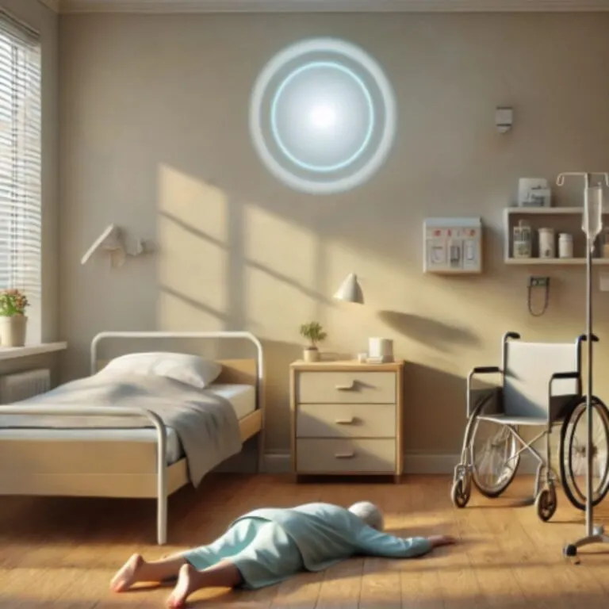

Famiglie
- Un supporto per chi può restare a casa propria
- Allerte ai familiari e dati consultabili a distanza
- Una scelta da valutare insieme al medico e a chi assiste
Monitoraggio e allerta, a casa
Medicleo veglia giorno e notte su anziani e persone fragili con un sensore radar non invasivo: allerte immediate a familiari e operatori, senza telecamere e senza nulla da indossare. Un'alternativa concreta all'ingresso in struttura, quando non è necessario.
Un ausilio alla cura, non un sostituto dell'assistenza sanitaria continuativa. Restare a casa è una scelta da valutare con la famiglia e i medici.

Qualità della vita
Dove possibile, restare nel proprio ambiente significa preservare abitudini e affetti. La sicurezza sostiene l'autonomia, non la cancella.
Continuare a scegliere i propri ritmi, con un supporto discreto che non prende il posto della persona.
Restare tra i propri ricordi, vicino ai familiari e alla comunità che si conosce.
Ricevere allerte anche a distanza e organizzare una risposta con chi si prende cura della persona.
Nessuna telecamera, nessun audio registrato: la casa resta uno spazio privato.
Il contesto
Sempre più persone anziane e famiglie più piccole: portare la vigilanza a domicilio significa rispondere a un bisogno concreto, senza rinunciare alla propria vita.
Dal 24,7% del 2025, nello scenario mediano delle previsioni Istat: una popolazione più anziana, con nuovi bisogni di assistenza.
Dal 4,1% del 2025. Cresce il bisogno di vicinanza e supporto, anche nelle ore in cui i familiari non possono esserci.
7,2 ogni 1.000 residenti, non tutti destinati agli anziani. Gli ospiti over 65 sono poco più di 291mila, quasi 239mila non autosufficienti.
Fonte: Istat, strutture residenziali al 1° gennaio 2024 · report
Altri 6.635 in attesa nelle Residenze Protette, compresi 1.668 con demenza. Dati riportati nell'interrogazione n. 84: un esempio regionale, non nazionale.
Fonte: Consiglio regionale Marche, interrogazione n. 84, 15 gennaio 2026
Le strutture sono indispensabili per chi ha bisogno di assistenza sanitaria continuativa. Ma i posti e l'accesso ai servizi non sono uniformi sul territorio; le attese e il costo delle rette pesano sulle famiglie.
Per chi può vivere a domicilio, una vigilanza continua può affiancare l'assistenza e aiutare a restare nella propria casa più a lungo.
Meno di 2 anziani su 100 vivono in una struttura.
Circa 14,8 milioni di over 65 e poco più di 291mila ospiti delle strutture: la grande maggioranza vive fuori. È anche a casa che va portata la sicurezza.
Elaborazione su dati Istat riferiti a date diverse (popolazione al 1° gennaio 2026, ospiti al 1° gennaio 2024): un confronto di ordine di grandezza. Fonte: Istat, Indicatori demografici 2025
Un dato regionale, non una media nazionale: importi arrotondati nella fonte, servizi inclusi variabili.
Fonte: CISL Milano, rassegna Conquiste del Lavoro · dati Lombardia 2025
La soluzione

Quando le condizioni permettono di restare a domicilio, Medicleo affianca familiari e operatori con monitoraggio continuo e allerte.
Frequenza cardiaca e respiratoria, sonno e presenza a letto, senza contatto.
Notifiche in caso di caduta e abbandono del letto, giorno e notte.
Informazioni consultabili dai familiari e dagli operatori autorizzati.
Niente immagini o audio registrati e nulla da indossare.
La Legge 33/2023 e il D.Lgs. 29/2024 promuovono il sostegno alla domiciliarità e alla qualità della vita delle persone anziane. È un quadro di indirizzo, non un riconoscimento specifico di Medicleo né una promessa di contributi.
Fonti: Gazzetta Ufficiale, Legge 33/2023 · Gazzetta Ufficiale, D.Lgs. 29/2024
Come funziona
Si definiscono l'ambiente, le persone autorizzate e chi risponde alle allerte. Poi il sensore affianca la vigilanza quotidiana.
Il sensore radar si installa nella stanza, senza alcun contatto con la persona e senza dispositivi sul letto.
Rileva in modo continuo frequenza cardiaca, frequenza respiratoria, qualità del sonno e movimenti.
In caso di caduta o abbandono del letto invia un'allerta agli operatori incaricati o ai familiari, che possono consultare i dati in tempo reale.
Per chi
Famiglie, enti e servizi possono collaborare per sostenere chi può restare a casa e affiancare chi opera nelle strutture.
Il risparmio
Quando la permanenza a casa è appropriata, il confronto dei costi può aiutare famiglie ed enti a valutare una soluzione sostenibile. Non tutte le situazioni producono un risparmio.
Retta, servizi inclusi ed eventuali extra. Una risposta necessaria per chi ha bisogni non gestibili a domicilio.
Assistenza proporzionata ai bisogni, monitoraggio e allerta, abitazione e spese quotidiane. Serve sempre qualcuno in grado di rispondere alle allerte.
Il sensore, il monitoraggio e le allerte: una presenza discreta al fianco di chi si prende cura.
Domande frequenti
Può essere un'alternativa concreta quando l'ingresso in struttura non è necessario. Le strutture restano indispensabili per chi ha bisogno di assistenza sanitaria continuativa: restare a casa è una scelta da valutare con la famiglia e i medici.
Dipende dalla situazione e dalla regione, e non tutte le situazioni producono un risparmio. Il calcolatore qui sopra aiuta a fare un confronto indicativo; il prezzo di Medicleo si ottiene richiedendo una proposta.
No. Il sensore radar si installa nella stanza, senza alcun contatto con la persona e senza dispositivi sul letto: non c'è nulla da indossare.
Nessuna telecamera e nessun audio registrato: niente immagini, la casa resta uno spazio privato.
In caso di caduta o abbandono del letto il sensore invia un'allerta agli operatori incaricati o ai familiari, che possono consultare i dati in tempo reale. Serve sempre qualcuno in grado di rispondere alle allerte.
Informazioni come frequenza cardiaca e respiratoria, sonno e presenza a letto, consultabili in tempo reale dalle persone autorizzate.
No. È un ausilio alla cura, non un sostituto dell'assistenza: la cura resta alle persone, il radar aiuta a sapere quando intervenire.
Sì: può supportare i progetti di assistenza domiciliare integrata e il monitoraggio di anziani soli sul territorio.
Una scelta importante merita risposte concrete. Guarda come funziona Medicleo e confronta le tue esigenze con ciò che il monitoraggio può offrire, senza confonderlo con l'assistenza alla persona.
Contatti
Richiedi una demo per capire come funziona il sensore, quali dati sono consultabili e come arrivano le allerte. Partiamo dalla persona e dall'ambiente in cui vive, non da una soluzione uguale per tutti.